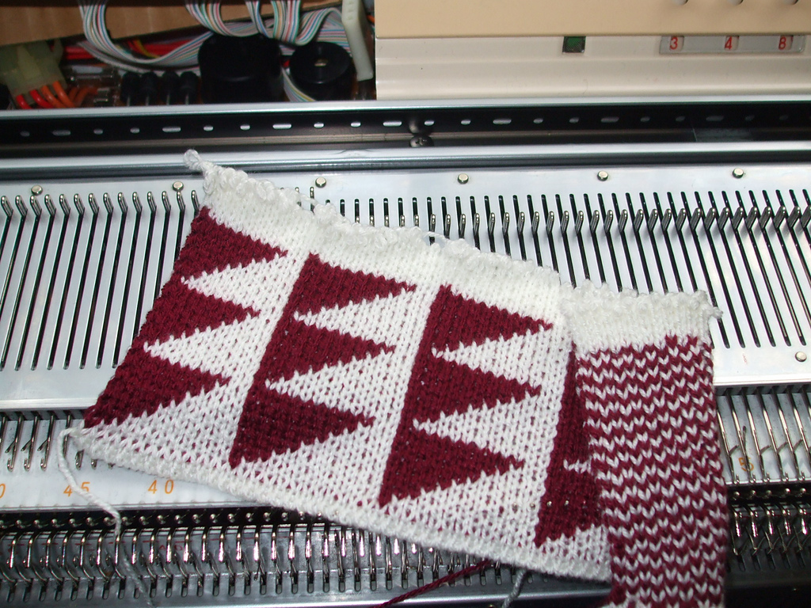

Introduction
Instructions for 2-color Double Bed Jacquard (AYAB's "Ribber" setting.)
Double bed jacquard (DBJ) as described here (Rib Jacquard with birds-eye backing)
is known in Brother manuals as Multi-Colour Rib. See pages 38-39 of the
KR850 ribber manual (the penguins) and
page 11 of the manual for the KRC-900 color changer.
You can make other DBJ variants, too (see end of this page).
Note that DBJ in 3 or more colors has some differences, though the basic
instructions are the same. Carriage part names are defined on page 32 of the
KH910 manual and
on page 1 of the KR850 manual, respectively.
Smiley was made from this image:

AYAB takes care of the colors for you, you just give it a black-and-white
pattern as if you are going to do single bed Fair Isle. This tutorial refers
to the foreground color as black, and the background color as white.
To create your own patterns, refer to section "Pattern creation".
Use thin yarns, you'll be using side-by-side needles on both beds.
(For those in the US, Woollike yarn works well.)
For your first practice sample, use this Triangles image that also comes with
AYAB 0.9 (or newer), find it in the folder [Path to your AYAB installation]/AYAB/patterns/.

which looks like this:

The useful thing about this Triangles pattern is that row 1 selects 1 black needle per triangle, row 2 selects groups of 2, row 3 groups of 3 etc. If you watch the needle selection carefully you'll start to understand what it's doing.
Instructions
- Set up the ribber (KR850 manual, pages 3-7)
- Set up the color changer (KHR900 manual, pages 2-4) with the black yarn (foreground color); the white slot (background color) is open ready to accept the yarn after the cast on.
- You might need the fine knit bar. Try it if your stitches sometimes tuck instead of knitting off.
- On the ribber, set half-pitch lever to H (P-H lever=H, see KR850 manual, page 13),
- On the ribber, set racking grip handle to 5 (Rack=5, KR850 manual p.13)
- set bracket lever to the normal (highest) position (KR850 manual, p.14)
- Needles L30-R30 on both beds for our first Triangles sample
- Make sure you have an even number of stitches on the ribber.
- Cast on in white in FNR (Full Needle Rib) as shown on pages 26-28 of the KR850 manual.
- Knit one or two rows of FNR.
- Carriage on left, outside the left turn mark.
- Set the row counter, RC=000
- Set up the carriages as shown on page 39 of the KR850 manual:
Main bed: Both part buttons in; KC1 or KC2.
I usually use KC2 rather than KC1.
Ribber: Both sliders (cam levers) up. Both lili buttons to lili.
Lower slide lever to lili (center).
Stitch Size depends on your yarn. Try 4/4.
- In the AYAB software, left-click "Load pattern" and select the image triangles_60x10.png. (For other patterns, choose a monochrome image that is at least as wide as the needles you are using)
- Set AYAB to 2-color, start at row 1, Infinite Repeat, start/stop needles 30/30, Ribber ("Ribber: Classic" for AYAB v0.95), Center.
- Press Configure.
- Press Knit.
- Press the color changer button for the black yarn.
- Bring the carriage out past the turn mark and stop to wait for the triple-beep as usual, just on this first row.
- Also check that the white yarn is in the feeder, and if this is its first row, check that the yarn end is hanging straight down and isn't caught anywhere.
- Knit across, wait for the beep.
- Knit back and into the color changer, the beep happens as you do so.
- Press the button to change to black.
- Knit across, wait for the beep.
- Knit back and into the color changer, the beep happens as you do so.
- Press the button to change to white.
That's it, repeat: Knit across, knit back, change color.
After the first set AYAB will have counted up two rows and be starting row 3,
the row counter will show 4 passes.
After about 10 rows (20 passes), stop with the carriage on the right and check:
- Let the starting ends of the yarn hang free.
- Make sure the ribber weights and comb are not caught on anything underneath.
- Feel along the knitting on both sides from underneath, you may be able to tell if a loop is caught around a gate peg.
- Hang edge weights if you are having trouble knitting off the edge stitches.
Then check again after several inches have been knit, by now you may be able to put a mirror underneath and check that the pattern you want is appearing on the work on the side away from you, and birds-eye stripes on the side facing you.
For finalizing the knit, you may want to add 1-2 rows of FNR (KR850 manual, p. 28). Binding off (casting off) is described on page 53 of the KR850 manual or in this video on Youtube: Double Bed Bind-Off Video) Any bind off that requires latching stitches through each other requires the last row before chaining stitches to be knit looser than previous ones (see below) An alternative method ("Das Abketten II") is translated as follows: Transfer all stitches to the rear needle bed [to the needle bed of the KH 910 (KR850 manual, p.52)] and immediately set the empty needles of the KR 850 ribber back to the B-position. At the K carriage of the KH 910, set the tension dial 4 steps higher [to 7]. The tension dial of the KR 850 ribber carriage remains unchanged. Move the carriage from left to right. On the needles of the KR 850 ribber, stitches have formed around the previously empty needles. Disconnect the carriages [(KR850 manual, p. 15)] and move the KR 850 ribber carriage from right to left. Thereby, the stitches are removed from the needles of the KR 850 ribber. Now, lower the KR 850 ribber [to the lowest position (KR850 manual, p. 14)]. This has created the elongated stitches that may again be chained through each other: Set the needles of the KH 910 needle bed to the E-position. Remove the weights and the comb, then proceed by binding off as described on page 22 or pages 111-114 of the KH910 manual.
More description on how 2-color DBJ works
In our Triangles sample with Infinite Repeat on, let's stop and observe, with
the carriage on the left at the beginning of row 1 of its cycle of ten rows. We
have just changed to the white yarn ready for the next row 1 as displayed in AYAB.
Remember that AYAB's row numbering focuses on what's being selected not what's
being knitted.
Notice that what's selected now is the last set of 10 white needles to complete
the previous triangle.
Knit across from left-right.
It has completed knitting the previous triangle, and has selected sets of 9
needles to do the background for the points of the next row of triangles.
Knit across right-left and change color to black. Stop again and observe before
you knit the row.
It has just knitted the sets of 9 white stitches, and selected
the single black stitches that go in between them,
forming the points of the row of triangles.
The sequence of 4 passes for two rows is:
Pass 1: White yarn, knit whatever it was given by the last selection of the
previous set. Select for the white stitches for row 1 of this set of two rows.
Pass 2: White yarn, knit the first white stitches, select for the black stitches
that will go in between the white stitches we just knitted, also for row 1 of
this set.
Change color to black.
Pass 3: Black yarn, knit the selected needles to complete row 1, select for the
black stitches of row 2 of this set.
Pass 4: Black yarn, knit the selected needles, select for the white stitches of
row 2 of this set.
Change color to white.
Notice that the selection is an "ABBA" sequence. White, black, black, white; repeat.
Each set of four passes does the selections for two rows of the pattern. But the set is not completely self-contained, its first pass completes the knitting of the previous set, and its fourth pass does a selection which will be knitted in the first pass of the next set of four passes.
You'll see discussions about Brother 2-color DBJ needing to start by selecting
from the right, so how does that square with AYAB always starting from the left?
I think it's just an alternative way of thinking about how 2-color DBJ works.
In the AYAB context where everything starts from the left, each set of 4 passes
has provided the selection for the next set during its last right-left pass. So
in a sense the first selection of the set did start on the right; in AYAB that
is counted as the last pass of the previous set.
Further observations
-
Color changers are not 100% reliable, though there are adjustments you can make. Occasionally it will grab both yarns or neither, and disaster ensues. Use the slower rhythm enforced by AYAB to take a look at the yarn in the feeder every time as it come out of the color changer. You may be able to stop in time to fix it.
-
The tutorial describes the instructions for knitting the background color first. Starting in version 1.0.0, AYAB chooses the most common color in the image as the background color.
-
You might be wondering what happens on the very first pass. There's nothing pre-selected on the main bed, so it only knits on the ribber (alternating needles because of the lili settings) while selecting for the first white pattern stitches. Technically I think that means that there's an extra ribber row at the beginning, but it gets absorbed into the backing pattern and is not noticeable. In subsequent first passes of the cycle of 4 passes/2 rows, it has been provided with selected needles to knit in white.
-
How do you end your pattern on exactly the right row at the end of a repeat? In Infinite Repeat you'll need to do one or two passes of the next cycle, but cancelling any selection on the second pass. In non-repeating, the long beep sounds after it has selected for the last row. Knit one or two more passes.
-
When using the lili settings, you must have an even number of stitches on the ribber. Take a look at the sides of your sample, do you want to have the edge stitch always on the main bed? (Optional, but may look better) To keep an even number on the ribber, your main bed will need on odd number of stitches.
-
Doing some FNR after the cast-on and before starting the pattern can make a wavy edge. With careful management, it's possible to use the last circular row of your cast-on as the first (setup) row of your pattern.
-
Sometimes you want DBJ all in one color. Just make an image that's all white or all black, no color-changing needed.
-
Some of Brother's DBJ instructions claim that the extra "latch plate" to add to the ribber connector arm is required. See page 49 of the 930/940 manual. Not so, it's optional. In fact when I tried it it seemed to make things worse, the color change was less reliable. (Latch plate is misspelled as Clatch Plate in the 930/940 manual.)
Alternative Jacquard variants with AYAB
Different variants of DBJ exist. A selection of carriage settings that can easily be used with the AYAB hack is provided in table 1 and table 2 below. More variants that require different degrees of hand manipulation are described together with fabric properties in a blog post by Alessandrina.
Table 1: Carriage settings for a selection of different DBJ variants. Adapted from a blog post by "steel breeze" and Alessandrina (2017) with permission from the original authors.
| Lever | striper (double) | striper (half) | tucked half Milano |
|---|---|---|---|
| KH carriage | ... | ... | ... |
| Cam buttons | Part L, Part R | Part L, Part R | Tuck R, Part L |
| Change knob | KCI or KCII | KCI or KCII | KCI |
| KR carriage | ... | ... | ... |
| Holding Cam Lever L | N | N | N |
| Holding Cam Lever R | N | N | N |
| KR Change Knob L* | 0 | 0 | 0 |
| KR Change Knob R* | 0 | 0 | 0 |
| Cam Lever L | N | N | N |
| Cam Lever R | N | P.R. | N |
| Tucking Lever | R | R | R |
| Slide Lever | IiIi | IiIi | IiIi |
* KR Change Knob = 0: turned inwards, away from IiIi mark.
Table 2: carriage settings for DBJ with solid backing. Adapted from "steel breeze" (2010) and Alessandrina (2017) with permission from the original authors.
| Lever | solid (col1)** | solid (col2)** |
|---|---|---|
| KH carriage | ... | ... |
| Cam buttons | Part L, Part R | Part L, Part R |
| Change knob | KCI or KCII | KCI or KCII |
| KR carriage | ... | ... |
| Holding Cam Lever L | N | N |
| Holding Cam Lever R | N | N |
| KR Change Knob L* | 0 | 0 |
| KR Change Knob R* | 0 | 0 |
| Cam Lever L | P.R. | N |
| Cam Lever R | P.R. | N |
| Tucking Lever | R | R |
| Slide Lever | IiIi | IiIi |
* KR Change Knob = 0: turned inwards, away from IiIi mark. ** After each 2 rows, change settings and proceed with the next color.
This article is copied from ravelry and modified by DerAndere. Thanks, Adrienne! Settings for alternative Jacquard variants were taken from a blog post by "steel breeze" and a blog post by Alessandrina. Feel free to improve it!